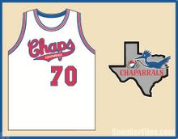
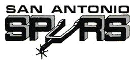
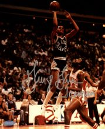

球队历史

马刺队是在1976年ABA与NBA合并后保持完整的原ABA联赛中的四支球队之一，也是原ABA联赛中唯一一支夺得NBA总冠军的球队。马刺是除波士顿凯尔特人、洛杉矶湖人、芝加哥公牛外夺冠次数最多的NBA球队。历史上，在“冰人”乔治·格文的率领下，马刺以其出色的进攻力逐渐成为NBA的一支劲旅，并于82年和83年两次闯入西部决赛，但两次都败给了由“魔术师”约翰逊领衔的湖人队。
 1967年，马刺队的前身达拉斯矮树丛队建队，球队以遍布德州和墨西哥的矮树丛命名。矮树丛队成为了ABA11支球队中的一支，当年球队就获得了联盟第二的好成绩。1968－69赛季结束后矮树丛队球员哈根退役并开始全身心的投入教练的工作，但他的努力最终宣告失败。在球队仅仅取得22胜21负的战绩的情况下，他被解雇了他的继任者马克思-威廉姆斯带领球队打出了45胜39负的成绩并且在西部分区最终排名第二。达拉斯在季后赛的第一轮中败给了洛杉矶星队。

矮树丛队在球场上的表现堪称出色，但他们同时也在为球队的第三个赛季寻求资助，主要原因是球队高层并不愿意为球队花太多钱。当1972-1973赛季球队首次错过季后赛时，几乎所有的球队投资方都想要放弃。一支以安吉洛-德罗索斯为首的36位圣安东尼奥商界人士团队同达拉斯投资商制定了一个“平等租借交换”协议——德罗索斯团队将球队出租三年后再搬回圣安东尼奥。成交后，球队更名为“圣安东尼奥枪手队”。然而，在球队的第一场比赛开始之前，队名又改回“马刺队”。球队颜色从之前矮树丛队的红、白、蓝变成了人们熟悉的黑、银、白的马刺图案。
冰人-乔治格文
乔治格文
